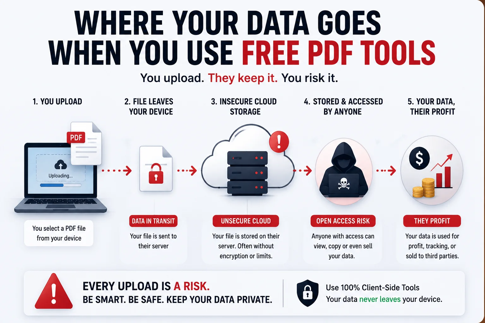
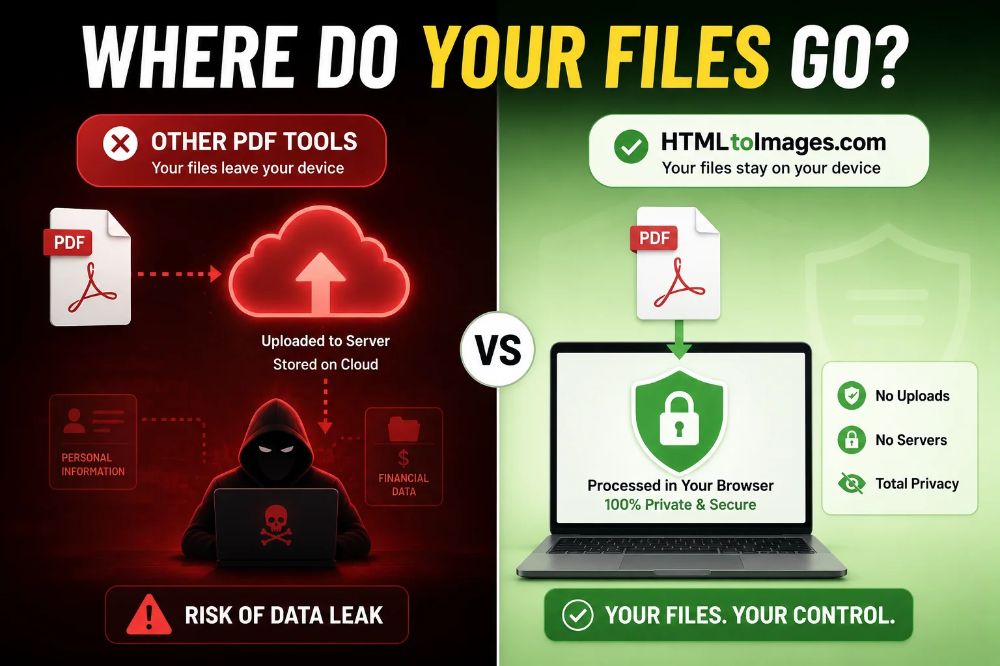

Imagine you are applying for a new job or filling out an urgent bank application. The portal requires you to upload your government ID, bank statements, and tax returns in PDF format. But there is a catch. The file size limit is only 2MB, and your scanned documents are 10MB.
You do what anyone would do. You open a new tab, search for a free PDF compressor, and drag your highly sensitive documents onto the very first website that appears.
You download the smaller file and close the tab. Problem solved, right? What you do not realize is that a complete digital copy of your entire life is now sitting on a random server in a foreign country.
For years we have been warned about phishing links and suspicious email attachments. Yet we completely ignore one of the biggest cybersecurity threats hiding in plain sight. We willingly hand over our most private data to free online tools without a second thought.
Today we are pulling back the curtain on the multi million dollar industry of free document converters. It is time to understand exactly where your files go after you click that upload button.
The Server Side Trap
The vast majority of popular online PDF tools operate using something called Server Side Processing. This means that the website itself does not actually do any of the work on your computer.
Instead, when you drag your document into the browser, it is quietly uploaded over the internet to a remote cloud server. This server unpacks your PDF, compresses the images, generates a new file, and sends it back to you for download.
The We Delete Files After 1 Hour Myth
Many of these websites feature a reassuring badge that claims your files are automatically deleted after 60 minutes. But in the world of cloud computing, deleting a file does not mean it is gone forever. Your data can be intercepted during the upload process, caught in automated server backups, or even scraped by background processes used to train large AI models.

How Your Free Tool Pays Its Bills
Maintaining high performance servers that can process millions of heavy PDF files every single day is incredibly expensive. If a company is offering you this service entirely for free with no subscription and no watermark, you have to ask yourself a critical question.
If you are not paying for the product, you are the product.
Buried deep within the privacy policies of many free converter websites are clauses that allow them to aggregate, analyze, or even share anonymized data with third parties. When you upload a bank statement or a passport scan, you are trusting a faceless company with the keys to your financial identity.
The Solution That Developers Use
As web developers, we face this problem every day. We need to manipulate files, but we cannot afford to compromise our clients sensitive data. The solution we rely on is a modern web technology called Client Side Rendering.
Thanks to incredible advancements in JavaScript and browser engines in 2026, your web browser is now powerful enough to handle complex tasks all by itself. A client side tool runs the entire compression algorithm directly inside your computers local memory.
The Ultimate Airplane Mode Test
How can you be absolutely sure that a website is not stealing your data? Try the Airplane Mode test.
- Step 1: Open a secure client side tool like our Compress PDF utility in your browser.
- Step 2: Turn off your Wi-Fi or put your device into Airplane Mode so you have zero internet connection.
- Step 3: Select your document and hit compress. Because our tool relies purely on your local browser power, it will compress your file instantly, even while completely offline. This is the ultimate guarantee that zero bytes of your data ever leave your device.

Protecting Your Digital Footprint
The next time you need to shrink a tax document, merge two ID cards, or convert a code snippet into an image, take a moment to think about your privacy.
You do not need to rely on risky cloud servers. We built the HTMLtoImages platform specifically to solve this problem. Whether you need a secure Image to PDF converter or our incredibly popular HTML to PNG tool, every single utility on our site is strictly client side.
Stop giving away your personal identity for the sake of convenience. Bookmark secure tools, use the Airplane Mode test, and take back control of your digital privacy today.
People Also Ask (FAQs)
Is it safe to upload personal documents to a free PDF compressor?
Uploading personal documents to standard server side PDF tools is extremely risky. Once you upload your file, it is stored on a remote server. Even if the website claims to delete files after a few hours, your sensitive data is exposed to potential data breaches and internal scraping.
What is the difference between client side and server side PDF tools?
Server side tools require you to upload your file to the internet for processing. Client side tools run entirely within your local web browser using your computers RAM. With client side tools, your file never leaves your device.
How can I tell if a PDF tool is actually secure?
The easiest way to verify if a tool is secure and client side is to turn off your internet connection. Load the website, disconnect your Wi-Fi or turn on Airplane mode, and then try to compress or convert your PDF. If it works offline, it is a secure client side tool.
Where do free PDF converter websites store my data?
Most free PDF converter websites store your uploaded files on cloud servers like AWS or Google Cloud. They often retain this data temporarily for processing, but hidden clauses in their privacy policies may allow them to use your data for AI training or analytics.